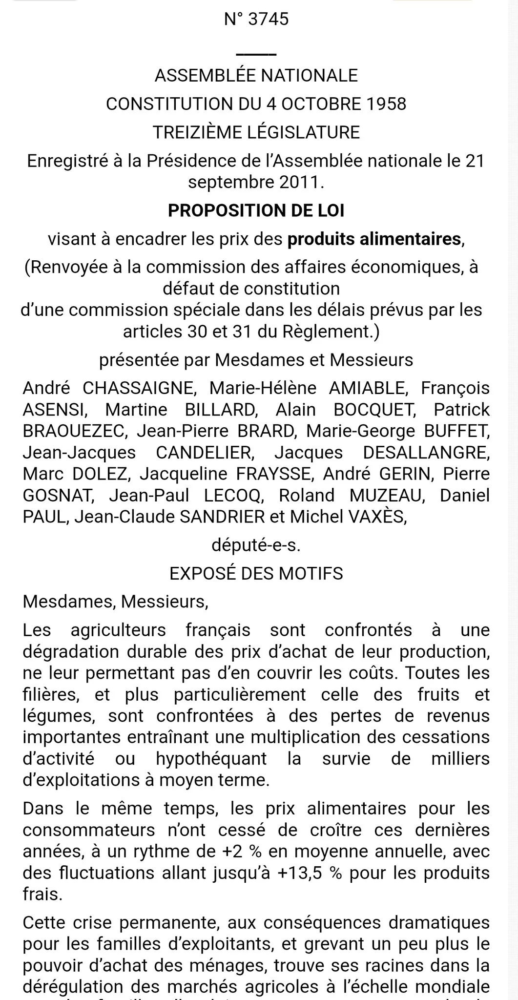

Publication d’archives
La question cruciale du revenu paysan .
Date indiquée par Facebook · 26 février 2024
Texte conservé avec la publication
La question cruciale du revenu paysan .
Un président copieusement hué par des paysans survoltés, des CRS déployés en nombre, une fois de plus, voilà une image dont se serait passé Emmanuel Macron pour l'ouverture du salon de l'agriculture. Mais il n'a pu éluder la question cruciale du revenu paysan en proposant « filière par filière des prix planchers ».
Mais que vaut cette proposition alors que le ministre de l'Agriculture jugeait fin janvier cette mesure « démagogique » ? Ce principe avait déjà été porté en 2011 par la proposition de loi du député PCF du Puy-de-Dôme André Chassaigne visant à garantir les prix d'achat aux agriculteurs, mais celle-ci avait été retoquée. Elle était prolongée en novembre 2023 par un texte présenté par Manuel Bompard (LFI), rejeté à 6 voix près par l'opposition massive des parlementaires macronistes.
Emmanuel Macron n'est pas entré dans le détail sur cette proposition. Il sait très bien que les prix planchers, plébiscités par la gauche depuis des années contredisent sa politique et celle de ses alliés européens, au moment où les eurodéputés s'apprêtent à voter deux accords de libre-échange avec le Kenya et le Chili.
Reste maintenant à savoir si cette annonce ne se cantonnera pas à un effet de manches, et il faudra être vigilant sur la façon dont la proposition sera mise en œuvre.

Sources
Archive rouge · export Facebook · AR-0002-FB-01463
À lire aussi · Le Hyaric : sortir de la prise en étau de l’agriculture